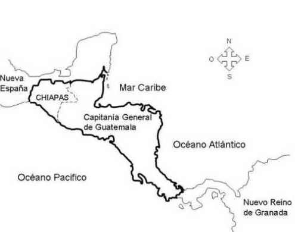

Territorio de centroamérica
El estrecho de Bering
Los Mayas
Bandera oficial de la República de Centro América de 1823 a 1838.
Guerra Civil de Centroamérica

Escudo del PARLACEN
Bandera del SICA

CENTROAMÉRICA EN LA ACTUALIDAD: Es la región geográfica dentro del continente americano comprendida entre América del Norte y América del Sur. Está rodeada por el océano Pacífico y el océano Atlántico (mar Caribe). Posee 522 760 km2Territorio de centroamérica
Países que la conforman: HISTORIA: América Central o Centroamérica estaba densamente poblada a la llegada de los europeos, y varias culturas se habían desarrollado en ella, aunque parece que su grado de complejidad no superó a las existentes en Mesoamérica. Siendo un espacio de tránsito poblacional, se asentaron en su territorio grupos de las zonas culturales precolombinas de Mesoamérica y de América circuncaribeña tales como los pueblos lencas, náhuas, kunas, chortíes, jicaques, payas, chorotegas, nasos y bribris, que han habitado el subcontinente durante milenios. Las principales familias lingüísticas precolombinas de Centroamérica son la mayense, la xinca, la lenmichí (lenca, misumalpa, chibchense), estos grupos parecen ser de origen autóctono, mientras que otros grupos tendrían su origen en el centro y norte de Mesoamérica, como los náhuas (utoazteca) y los chorotegas (otomangue). Se cree que los primeros habitantes llegaron a Centroamérica luego del arribo de los primeros seres humanos a América, provenientes de Asia septentrional por el estrecho de Bering o de las islas polinesias hace unos 15 000 años. Los mayas son los pueblos habitantes de una vasta región que se ubicaba geográficamente en el territorio del sur de México, Guatemala, la zona occidental de Honduras y otras zonas de Centroamérica. Es especialmente importante su presencia e influencia en los actuales territorios de Guatemala, Honduras y en departamentos en la parte norte de El Salvador, con una rica historia de unos tres mil años. El estrecho de Bering
Los Mayas
Época precolombina: En la época precolombina, las culturas centroamericanas vivían en constantes guerras expansivas, sabotaje y competencia mutua. La mayoría del territorio de Centroamérica era parte de la civilización de origen mesoamericana, cuyas sociedades nativas ocuparon la tierra entre el centro de México en el norte, hasta el noroeste de Costa Rica en el sur y sometían a tributo y explotación a las confederaciones indígenas y tribus de sus confines; mientras la civilización de origen chibcha ocupaba la tierra en el este de El Salvador, Honduras, Nicaragua y Costa Rica en el norte, hasta Panamá en el sur. Las culturas precolombinas de toda la región comerciaron y guerrearon entre sí, y con Sudamérica, creando incipientes plazas comerciales, en esta llamada zona de transición entre dos áreas culturales continentales del norte y el sur. Período Post Conquista: Desde el siglo XVI hasta principios del siglo XIX, Centroamérica estuvo incorporada en la Capitanía General de Guatemala, algunas veces conocido como Reino de Guatemala, cuya integración y división interna varió repetidamente. Oficialmente, la Capitanía era parte del Virreinato de Nueva España, y por lo tanto, bajo el control del virrey español en Ciudad de México. Sin embargo, este no fue administrado por el virrey sino por un Capitán General independiente, el cual primero tenía sus instalaciones en la ciudad de Gracias Lempira, luego fue transferida a Santiago de los caballero de Guatemala, por último a la Ciudad de Guatemala. Durante este período la región experimentó grandes cambios demográficos, sociales, económicos y lingüísticos. Aparecieron ciudades importantes fundadas por los europeos y llegaron importantes contingentes de origen europeo (colonizadores), así como contingentes africanos (esclavizados) que se sumaron a las poblaciones autóctonas. El español se convirtió en la lengua principal de la región.  Anexión a México: Después de la independencia, surgió la idea de anexarse al Primer Imperio Mexicano de Agustín de Iturbide, decisión que se consultó con los ayuntamientos. Recibidos los votos mayoritarios de los ayuntamientos, el gobierno de Guatemala proclamó la anexión de Centroamérica a México. Esta decisión fue adversada de modo rotundo por El Salvador, y tampoco contó con algunas poblaciones de Honduras, Nicaragua y Costa Rica; sin embargo, un ejército mexicano bajo el mando del General Vicente Filisola ocupó la Ciudad de Guatemala y después invadió y ocupó El Salvador, a pesar de que los salvadoreños proclamaron su unión a los Estados Unidos de América.Provincias Unidas de Centroamérica: El 1 de julio de 1823, se reunió en Guatemala el congreso, bajo la presidencia del presbítero José Matías Delgado, y declaró que las provincias ahí representadas eran independientes de España, de México y de toda otra nación. El nuevo país tomó el nombre de Provincias Unidas del Centro de América. Al día siguiente, 2 de julio, los diputados se declararon constituidos en Asamblea Nacional Constituyente y proclamaron que en ella residía la soberanía nacional, y pusieron en vigencia temporalmente la Constitución de Cádiz. La Asamblea Nacional Constituyente decretó una bandera y un escudo para el nuevo Estado, y nombró una junta de gobierno provisional de tres miembros (Primer Triunvirato de Centroamérica). En octubre de 1823 fue reemplazada por otro (Segundo Triunvirato de Centroamérica), que gobernó hasta 1825. La naciente unión centroamericana, oficialmente denominada República Federal de Centroamérica, comprendía los Estados de Guatemala, El Salvador, Honduras, Nicaragua y Costa Rica. Los liberales centroamericanos tenían grandes esperanzas en la República Federal, la cual ellos creían que iba a evolucionar en una moderna y democrática nación, enriquecida por el comercio a través de la zona, entre los Océanos Atlántico y Pacífico, a la vez que iban a librarse por fin del yugo a que los tenían sometidos los conservadores de Guatemala. La federación estaba formada por cinco Estados: Guatemala, El Salvador, Honduras, Nicaragua y Costa Rica. En 1838 se formó un sexto Estado, Los Altos, con capital en la ciudad de Quetzaltenango, con los territorios del occidente de Guatemala, y parte del actual Soconusco de Chiapas (México). Limitaba al sur con el Océano Pacífico, al este con el Mar Caribe, al Sureste con Panamá (provincia de Colombia entonces), y al Noroeste con México. El territorio de la federación también incluía Belice. Entre los años de 1838 y 1840, la federación entró en un período de guerra civil. El primer Estado en separarse definitivamente fue Nicaragua, en abril de 1838; en octubre esta decisión fue imitada por Honduras, y en noviembre por Costa Rica. Guatemala se separó en 1839 y, bajo el gobierno de Rafael Carrera, forzadamente absorbió al Estado de Los Altos. A finales de 1839, la federación había dejado de existir; sin embargo, durante el siglo XIX hubo numerosos intentos para restablecerla, manifestados en las conferencias unionistas centroamericanas. Bandera oficial de la República de Centro América de 1823 a 1838.
Guerra Civil Centroamericana: Debido a que los conservadores no querían ceder los privilegios a los que estaban acostumbrados desde la época colonial, muy pronto estallaron una serie de disensiones y guerras civiles, que culminaron con el derrocamiento en 1829 del gobierno constitucional cuyo Presidente titular era el salvadoreño Manuel José Arce y Fagoaga, elegido en 1825, y que ejercía desde 1828 el Vicepresidente Mariano Beltranena y Llano, guatemalteco. Ese año también fue derrocado el gobierno conservador de Guatemala dirigido por Mariano de Aycinena y Piñol por una invasión dirigida por el general hondureño Francisco Morazán quien confiscó todos los bienes a los miembros del Clan Aycinena, y los expulsó del territorio centroamericano junto con los miembros del clero regular. Interinamente se hizo cargo del gobierno el liberal guatemalteco José Francisco Barrundia y Cepeda y en 1830 fue elegido como Presidente el general hondureño Francisco Morazán, quien posteriormente fue elegido otra vez para el período 1835-1839. Morazán empezó a hacer negocios con los ingleses que tenían un puesto comercial en Belice y lo mismo hizo el gobernador del Estado de Guatemala, Mariano Gálvez, lo que junto con el intento de aplicar leyes novedosas en el país —como el divorcio y el uso de jurados— causó resentimiento entre los pobladores guatemaltecos, quienes miraban a los ingleses y a los liberales como herejes. Los miembros del clero secular no habían sido expulsados de Centroamérica, pero habían quedado debilitados por la eliminación del diezmo obligatorio; aun así, debido a la educación fuertemente católica que había habido en Guatemala, les fue fácil convencer a los indígenas y mestizos de las intenciones heréticas de los liberales, y esto creó el ambiente propicio para que los conservadores retornaran al país.5 En la segunda administración de Morazán resurgió la guerra civil: en 1837 el gobierno de Mariano Gálvez fue acusado de envenenar los ríos con cólera morbus y eso, aunado a las acusaciones de herejía, provocó una rebelión campesina de la que surgió el caudillo Rafael Carrera y Turcios. Ante la debilidad y falta de transparencia mostrada por el gobierno de Morazán, Nicaragua se separó de la República el 30 de abril de 1838, y el Congreso federal aceptó que se constituyera un nuevo Estado, Los Altos, cuya capital era Quetzaltenango, con las tierras occidentales de Guatemala. Honduras se separó de la unión el 6 de octubre y el 14 de noviembre Costa Rica lo imitó. Guatemala se separó el 17 de abril de 1839 y a principios de 1840 las tropas del capitán general Rafael Carrera y Turcios reincorporaron Los Altos. Guerra Civil de Centroamérica
Siglo XX: Actualmente, desde 1991, el Parlamento Centroamericano ha estado operando, también conocido como PARLACEN (parlamento centroamericano) es una institución política consagrada a la integración de los países de Centroamérica, aunque no ha dado ningún paso sustancial dirigido a la restauración de la unión política. Tiene su sede en la Ciudad de Guatemala y lo integran Diputados de El Salvador, Guatemala, Honduras, y Nicaragua. Costa Rica no ha aprobado el convenio constitutivo del Parlamento, ni el de la Corte Centroamericana de Justicia constituida en el decenio de 1990, de la que tampoco es parte Guatemala. República Dominicana y México como observadores regionales. En 1903 tras la Separación de Panamá de Colombia, la nueva República de Panamá quedó geopolíticamente inserta en territorio centroamericano. Esta república pese a estar vinculada histórica y culturalmente con América del Sur y el Caribe, es partidaria de la integración centroamericana y en 1993 se suscribió al PARLACEN, tomando participación activa en sus acuerdos y fortaleciendo sus vínculos comerciales con los países de la región, aunque en el 2009 Panamá inició su proceso de separación del SICA. En la historia reciente uno de los personajes que más ha luchado por la integración es el Presidente de Guatemala Vinicio Cerezo, quien durante su mandato (1986-1991) promovió a través de los Acuerdos de Esquipulas, no solo la búsqueda de la Paz Firme y Duradera en la región sino también un esfuerzo por la integración de las decisiones políticas en Centroamérica. Los Acuerdos de Esquipulas promovieron también la creación del Sistema de la Integración Centroamericana y posteriormente el Parlamento Centroamericano, en la búsqueda de una institucionalidad regional capaz de respaldar los procesos regionales. Escudo del PARLACEN
Bandera del SICA
APOYAME DANDO TU RESEÑA :]